Здесь собраны ответы на самые частые вопросы по настройке, диагностике и ремонту CO₂-лазерных станков.
Настройка чиллера — неотъемлемый шаг для обеспечения эффективной и долгосрочной работы системы охлаждения. В этой статье мы рассмотрим, как правильно настроить чиллеры различных моделей от компании TEYU.
Настройка чиллеров CW-5000, CW-5200 и CW-5202 (контроллеры T-503D, T-503E, T-504D)
- Доступ к настройкам: Нажмите и удерживайте клавиши SET и ▲ несколько секунд. Система запросит ввод пароля.
- Ввод пароля: Используя клавиши ▲ и ▼, установите значение "8" и подтвердите нажатием SET.
- Переключение режима: Переключитесь с "умного режима" в режим поддержания температуры. Выберите параметр F3, нажмите SET, установите значение "0" и подтвердите.
- Установка температуры: Выберите параметр F0, нажмите SET, установите нужное значение и подтвердите.
- Установка отклонения: Выберите параметр F2, нажмите SET, установите желаемое значение разности температур и подтвердите.
- Сохранение: Нажмите SET и выйдите из настроек, нажав RST.
Восстановление заводских настроек: Нажмите и удерживайте ▲ и ▼ до появления надписи «rE».
Пример: Если F0 = 19℃ и F2 = 2℃, то при достижении 21℃ чиллер начнет охлаждать систему до 19℃. Рекомендуется устанавливать F2 в несколько градусов, чтобы компрессор имел возможность для "отдыха".
Для моделей CW-5300, CW-6000, CW-6100, CW-6200 (T-506D, T-506E), CW-6300 (T-804A, T-804B), RMUP-300, RMUP-500 (T-801B) и CWFL-1000, CWFL-1500 (T-607) алгоритм схож, но могут отличаться кнопки навигации и пароли (например, 359 для T-804 и T-801).
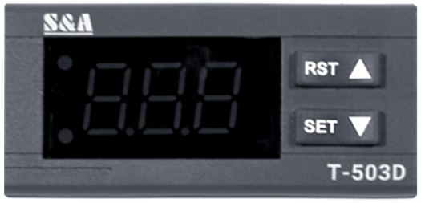
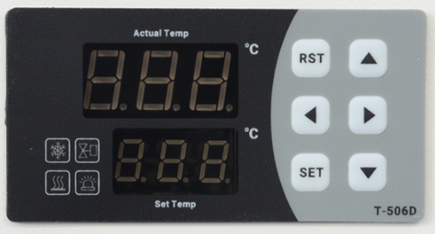
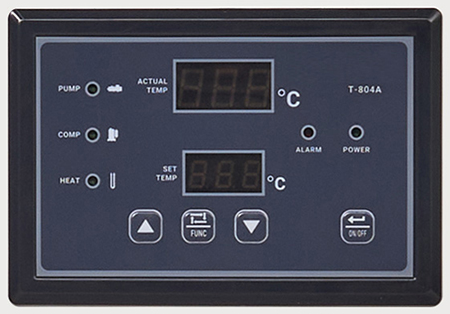
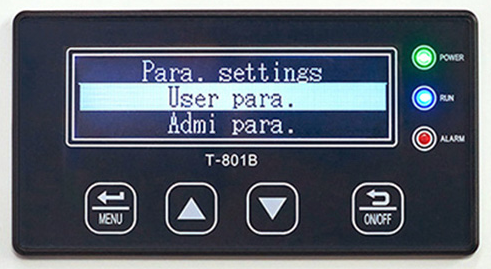
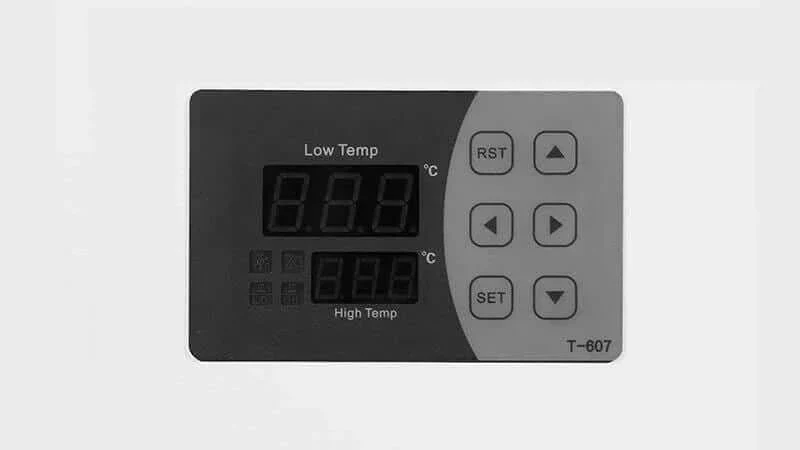

Изменение ширины луча может происходить постепенно или внезапно. Слишком большая ширина при гравировке приводит к потере мелких деталей, а при резке — к люфтам и зазорам. Основные причины:
- Загрязнения на линзе, зеркалах или выходном зеркале трубки. Регулярно очищайте оптику сжатым воздухом и безворсовой салфеткой с изопропиловым спиртом.
- Материал расположен не в фокусной точке (расфокусировка). Отрегулируйте положение головки или стола.
- Слишком большая мощность во время резки. Подберите правильное соотношение скорости и мощности.
- Слабый обдув, приводящий к оплавлению материала. Обеспечьте достаточное давление.
- Нарушение положения зеркала в лазерной головке (луч задевает сопло).
- Линза установлена неправильно. Собирающая линза должна быть выпуклой стороной вверх.
- Фокусное расстояние линзы не соответствует тубусу.
- Установлена длиннофокусная линза (у нее пятно больше, но зона каустики шире).
- Перекос стола или деформация направляющих.
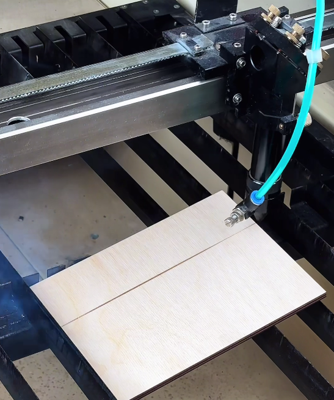
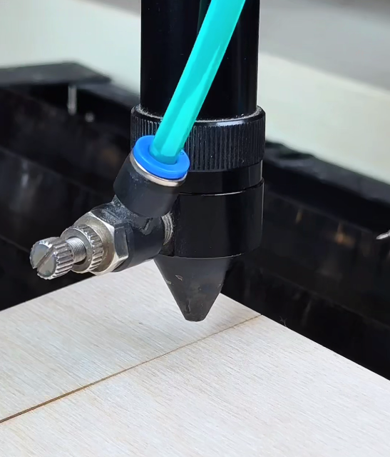
Миллиамперметр постоянного тока необходим для измерения силы тока во время работы излучателя. Он устанавливается в разрыв низковольтного провода, ведущего от наконечника лазерной трубки к блоку розжига (высоковольтному блоку питания).
Простой аналоговый миллиамперметр имеет два контакта: один соединяется с отрицательным электродом (катодом) трубки, другой — с отрицательным контактом блока розжига. Если стрелка отклоняется влево (в минус), поменяйте контакты местами.
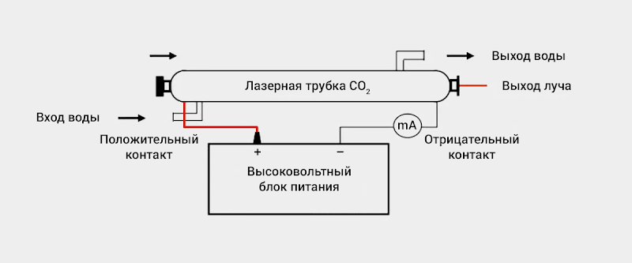
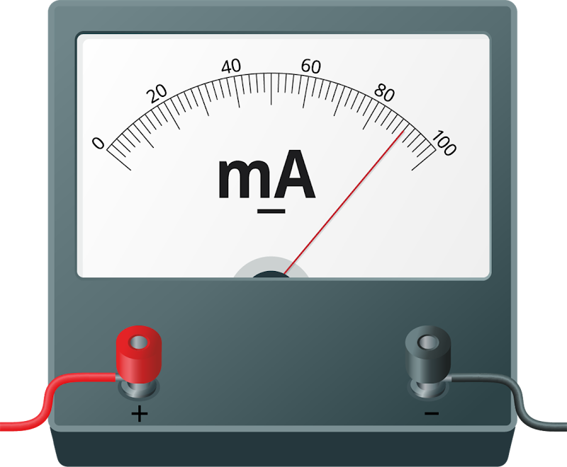
Тубусы лазерных головок рассчитаны под линзы с определенным фокусным расстоянием. Проверить линзу можно так: вертикально поставьте линейку на стол, держите линзу над столом, поднимите фонарик на высоту ~60 см над линзой и перемещайте линзу вверх-вниз.
Высота от линзы до стола, при которой свет фокусируется в минимальное пятно, и есть фокусное расстояние линзы. При неправильной линзе луч фокусируется некорректно, и часть излучения попадает на сопло, разогревая его.
Причины могут быть разными:
- Нарушение траектории луча (юстировка): Углы зеркал могут сбиваться от вибраций. Проверяйте юстировку по 4 углам и в центре стола.
- Загрязнение и износ оптики: Пыль и продукты горения рассеивают излучение. Очищайте изопропиловым спиртом и микрофиброй.
- Деградация газовой смеси: Со временем трубка теряет мощность (до 50% в год даже в неактивном состоянии).
- Загрязнение охлаждающей жидкости: Используйте только дистиллированную воду, меняйте раз в 2-3 месяца.
- Загрязнение поверхности трубки: Снижает эффективность охлаждения и копит статику.
- Нарушения в работе охлаждения: Рабочая температура трубки 17–21ºС. Проверьте помпу и чиллер.
- Повышение температуры в помещении: Увеличивает нагрузку на систему охлаждения.
- Нарушения в работе блока розжига: Естественное старение компонентов.
- Снижение напряжения сети: Используйте стабилизатор с запасом мощности минимум 15%.
- Нарушение работы вытяжки и обдува: Скопление продуктов горения снижает мощность.
Если внезапно пропал луч: выключите станок, подождите 10–15 минут, осмотрите трубку на повреждения и проверьте соединения. Если визуально всё целое:
- Включите станок, установите мощность 80% и нажмите «Pulse». Если луча нет — переходим к ВБП.
- Проверьте, вращается ли вентилятор ВБП, горят ли индикаторы.
- Отключите широкую управляющую клемму (TH-TL-WP-G-IN-5V). Нажмите кнопку «TEST» на ВБП. Если миллиамперметр показывает 0, а звук ВБП меняется — скорее всего, проблема в трубке.
- Замкните контакты IN и 5V (имитация 100% мощности) и нажмите TEST. Если трубка не разожглась — она требует замены.
- Если трубка разожглась — проблема в датчике протока или контроллере.
Тест «на искру» (ВБП): Осторожно! Высокое напряжение. Извлеките блок, закрепите провода на расстоянии 1 см друг от друга, замкните IN и 5V, нажмите TEST. Если дуга пробивает 1 см — блок выдает ~10 кВ. Увеличивайте расстояние на 5–10 мм, чтобы понять, соответствует ли напряжение номиналу (до 45 кВ).
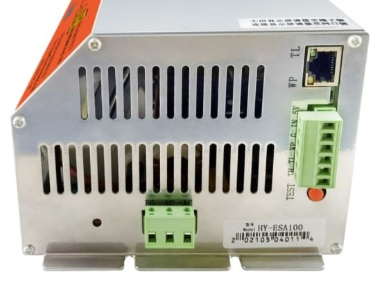
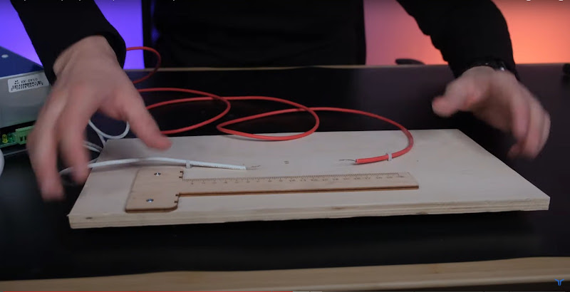
- Износ/прогар полупрозрачного зеркала, зеркал или линзы: Замена оптики или чистка.
- Отсутствие юстировки: Проведите юстировку заново.
- Перегрев трубки: Проверьте систему охлаждения, удалите воздушные пробки.
- Проблемы с источником питания: Замените ВБП на рабочий.
- Попадание посторонних объектов: Удалите всё, что мешает лучу.
- Падение напряжения в сети: Установите стабилизатор (погрешность до 3%, время срабатывания до 20 мс).
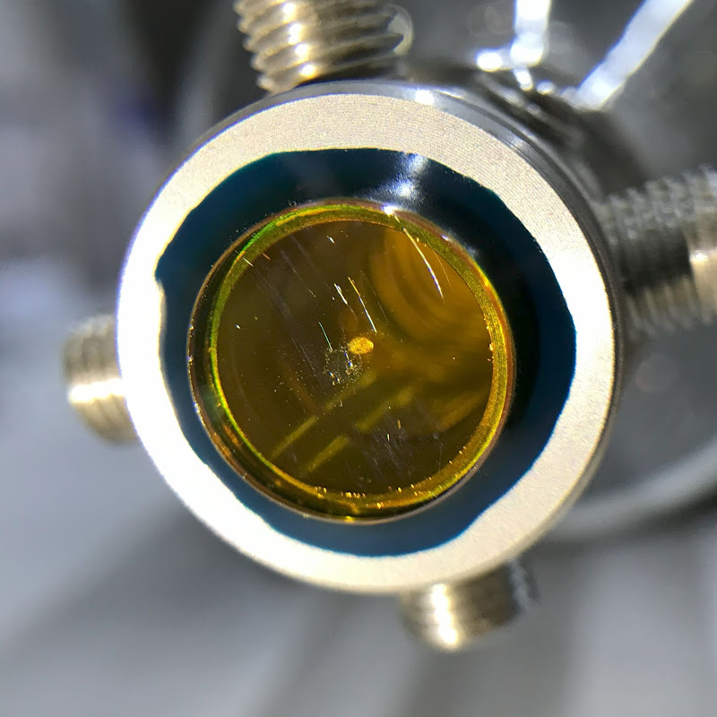
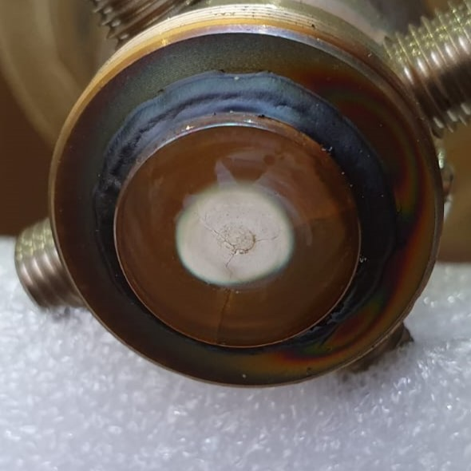
Высоковольтный блок питания (ВБП) преобразует напряжение сети в высокое для розжига трубки. Основные характеристики для подбора: максимальная выходная сила тока и максимальное напряжение.
- Ток ВБП должен соответствовать рабочему току трубки (лучше с запасом 2-8 мА).
- Напряжение ВБП должно соответствовать напряжению розжига трубки (запас 3-10 кВ).
- Ток регулируется подстроечным резистором под отвертку.
- Стандартные серии: DY, T, TA, XA, WA. «Умные» серии (ESA, Z) надежнее: имеют фильтр помех, не копят остаточное напряжение, могут подключаться к RuiDa.
- Кнопка «TEST» позволяет проверить розжиг в обход контроллера (выходной ток ~40% от максимума).
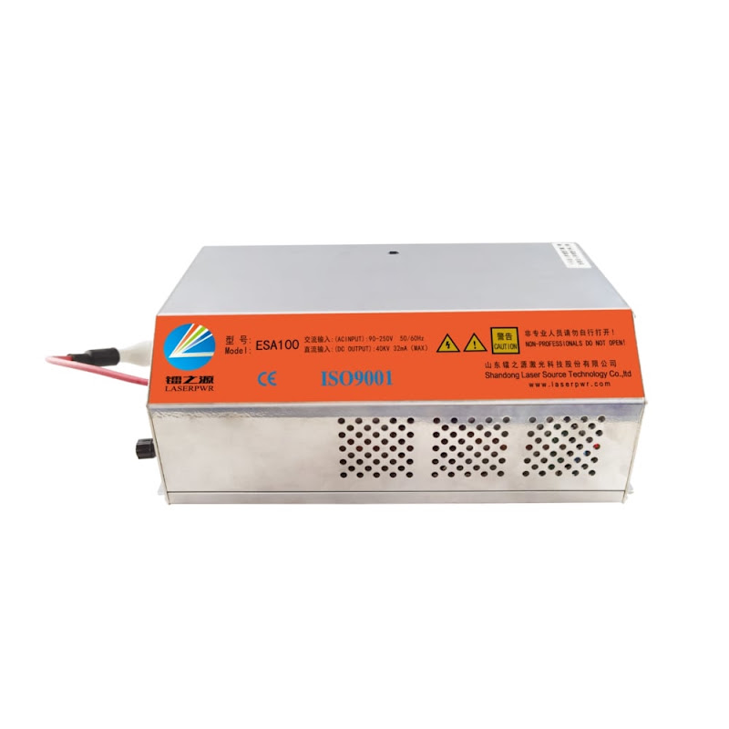
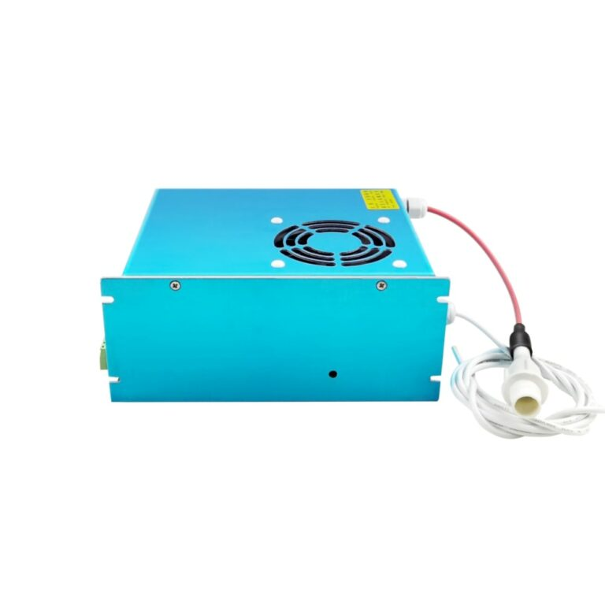
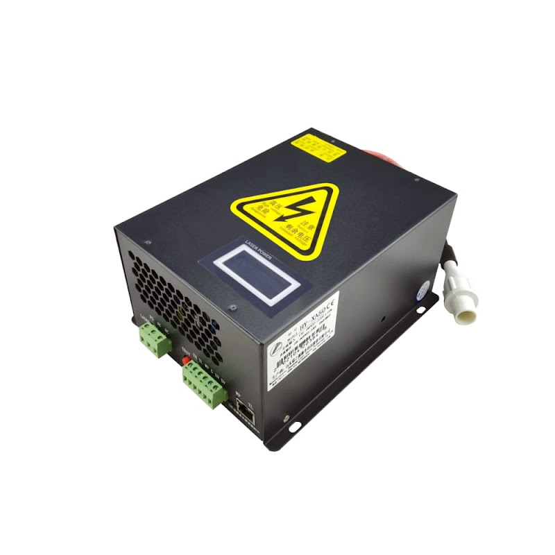
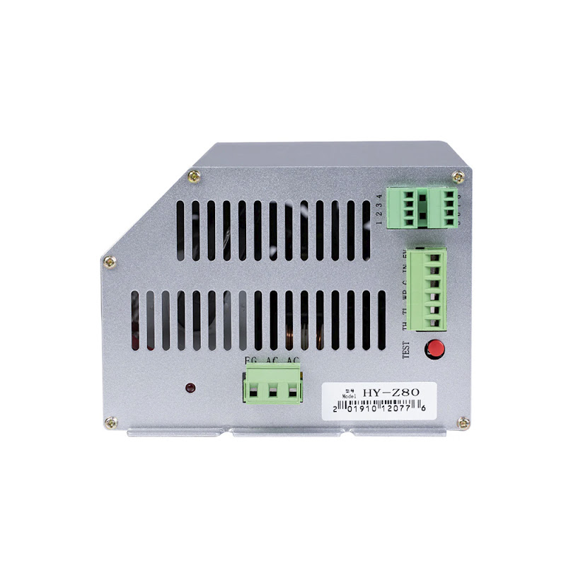
- Лазерный луч CO2 невидим — используйте защитные очки!
- Регулярно осматривайте выходное зеркало трубки на загрязнения. Чистите сжатым воздухом или изопропиловым спиртом с безворсовой салфеткой. Не используйте ватные палочки.
- Осматривайте электрические соединения, удаляйте загрязнения сжатым воздухом при отключенном питании.
- Используйте только дистиллированную воду для охлаждения.
- Удаляйте воздушные пузыри из контура охлаждения.
- Меняйте воду каждые 2-4 месяца.
- Сила тока блока розжига не должна превышать рабочий ток трубки.
- При эксплуатации лазеров COLT RX не крутите юстировочные винты на наконечнике.
Стук возникает из-за проскальзывания ремней на шкивах из-за слабого натяжения. Ось X имеет один ремень, ось Y — два.
Регулировка: Убедитесь, что портал не перекошен. Натяните ремни (винтами или вручную, в зависимости от модели). Проверьте тестовым резом квадратов и окружностей — если геометрия нарушена, отрегулируйте натяжение сильнее. При сохраняющихся люфтах отрегулируйте эксцентрики (шестигранные гайки на колесах).
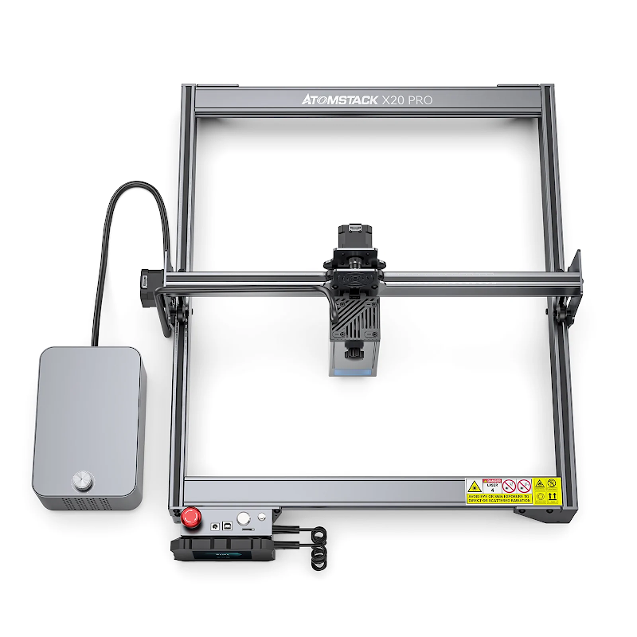
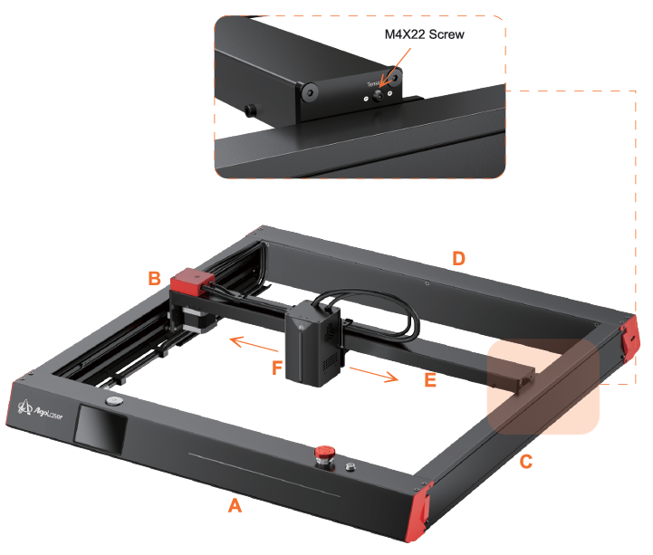
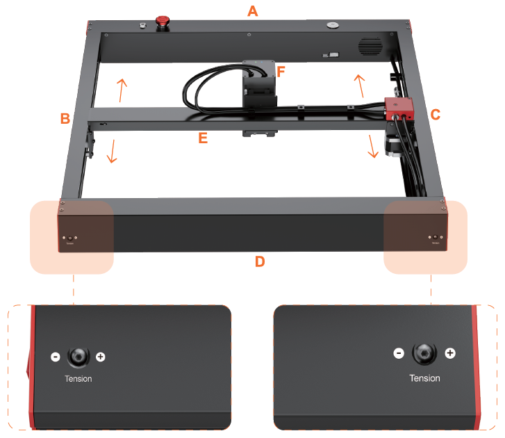
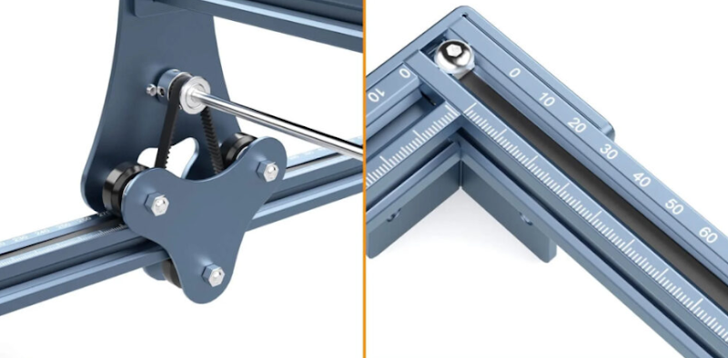
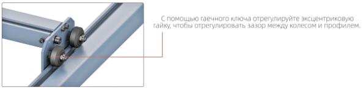
Стабилизатор корректирует выходное напряжение и защищает от скачков. Для промышленного оборудования важны:
- Мощность: Должна превышать суммарное потребление на 20-30%. Подключайте только станок, чиллер и вытяжку — отдельно.
- Погрешность: Не более 3%.
- Диапазон входного напряжения: Должен соответствовать вашей сети.
- Время срабатывания: Не более 20 мс.
Типы: Релейные (погрешность 50%, шумят), электронные (3-10%), электромеханические (2-3%, плавная регулировка — оптимальны для станков), инверторные (до 2%, дорогие).
Блок HY-Z (LaserPWR) подключается к разъему «RTLink» материнской платы RuiDa. Это позволяет отслеживать ток и напряжение на дисплее контроллера, а также видеть ошибки.
После подключения в программе RDWorks зайдите в «Заводские настройки» (пароль RD8888), нажмите «Считать», в разделе «Лазер» -> «Настройки станка» поставьте галочку «Показать данные с БВН Лазера», нажмите «Записать» и перезагрузите контроллер.
Ремни имеют зубчатую поверхность и кордовый сердечник. Из-за износа, натяжения и температуры они растягиваются. Новый ремень будет отличаться по эластичности от старого, что вызовет рассинхронизацию приводов (особенно на осях с двумя ремнями). Поэтому при износе одного ремня меняют весь комплект.
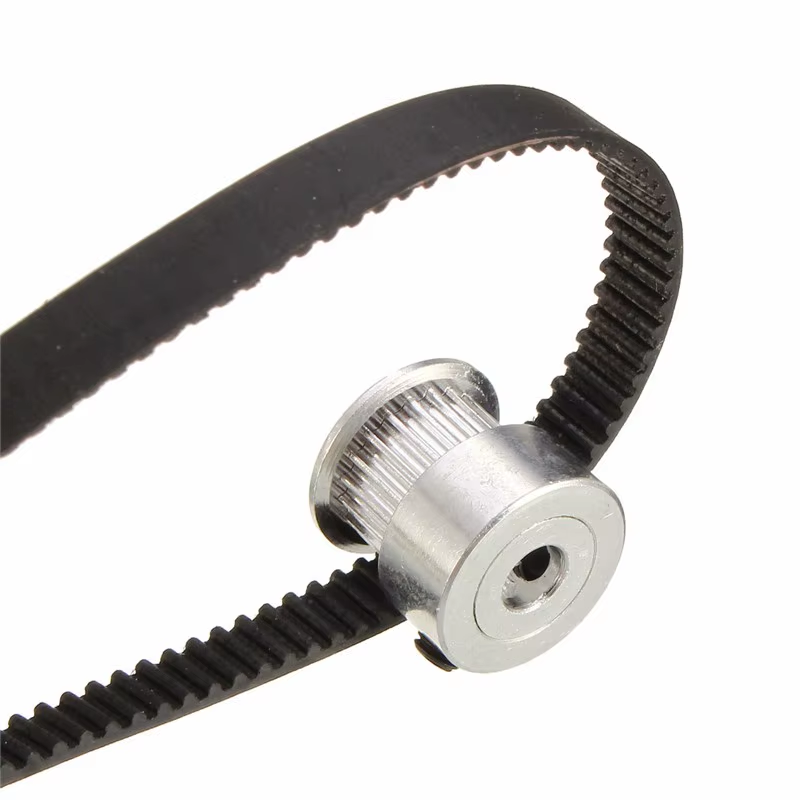
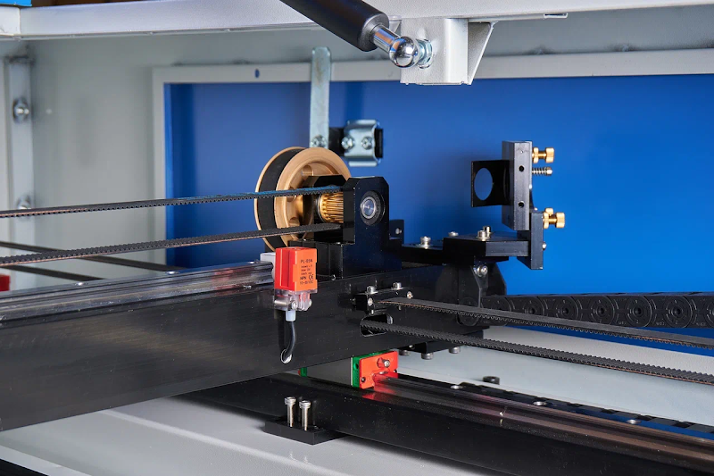
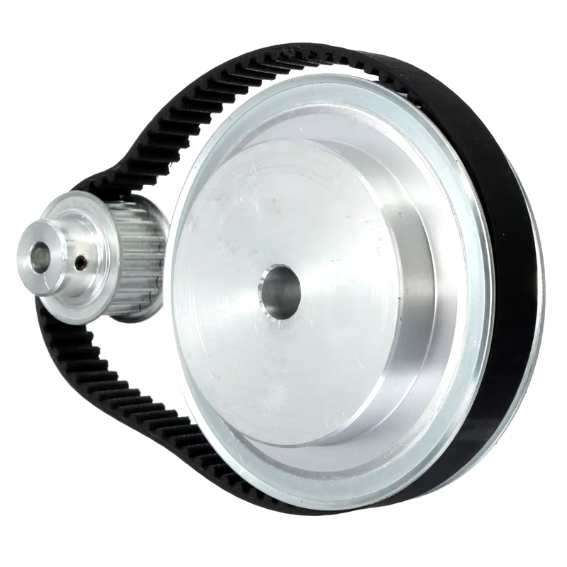
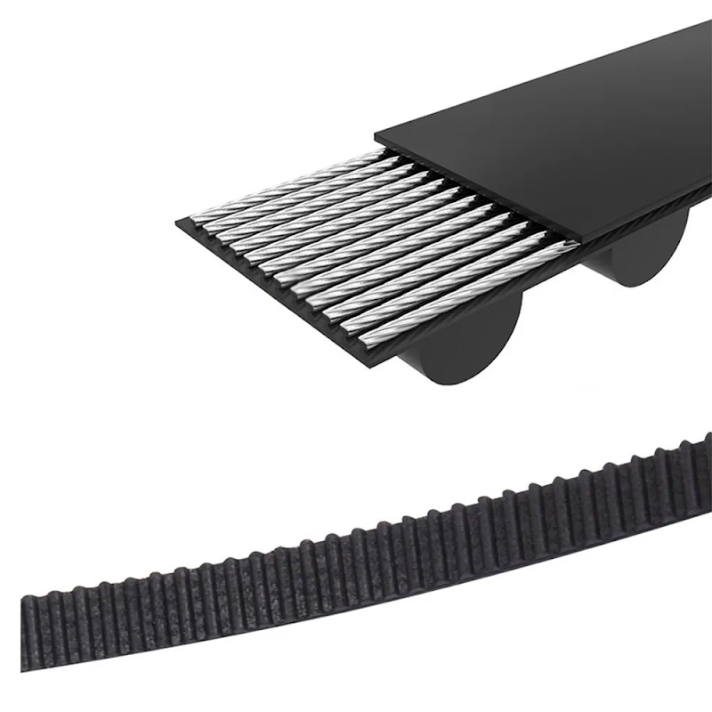
Мода луча — это форма пучка света. Обычно используется мода низшего порядка (TEM00), так как она имеет наименьшую расходимость и фокусируется в узкую точку. Нарушение моды (например, после замены трубки или юстировки) приводит к неравномерному резу. Для исправления требуется проверка соосности всех элементов оптического тракта.
Ошибка E6 связана с перегрузкой компрессора, E7 — с проблемой датчика температуры. Алгоритм решения:
- Проверьте подключение воды (шланги не должны быть перегнуты).
- Замените воду в системе, удалите воздух. Используйте дистиллированную воду (можно с пропиленгликолем).
- Проверьте электропроводку и питание.
- Проверьте датчики (пережмите шланг, снимите датчик температуры).
- Проверьте помпу (должна быть вибрация).
Клеммы ВБП: AC (питание), FG (заземление), L/H (уровни), WP (защита потока), G (земля), IN (модуляция 0-5В), 5V.
Настройка:
- Соберите управляющую колодку.
- Подключите питание ВБП. Пока управляющая колодка не подключена, блок в тестовом режиме (ток 50%).
- Подключите толстый красный провод к аноду, тонкий черный — к катоду трубки.
- Проверьте розжиг кнопкой «TEST».
- На контроллере установите 80% мощности. Зажмите Pulse и посмотрите ток. Регулируйте подстроечным резистором на ВБП до рабочего значения трубки (например, 24 мА для Reci T2).
Цифровой миллиамперметр: Блоки LaserPWR с буквой «A» (TA, XA, ESA) имеют разъем RJ-45 для подключения. Соедините комплектным проводом.
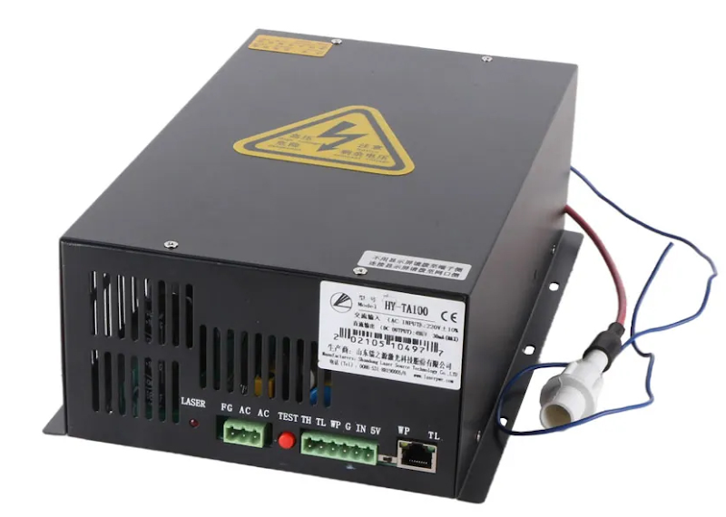
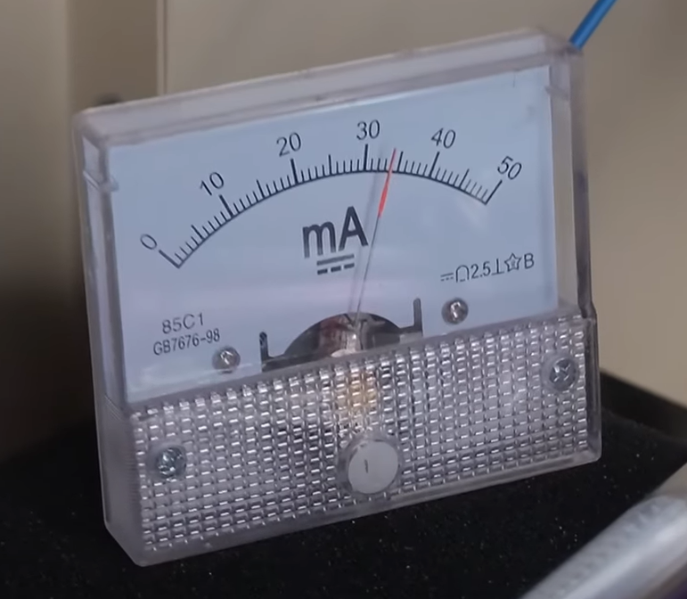
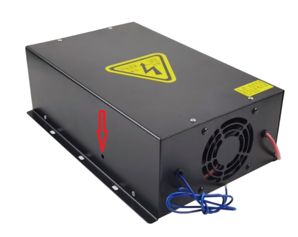
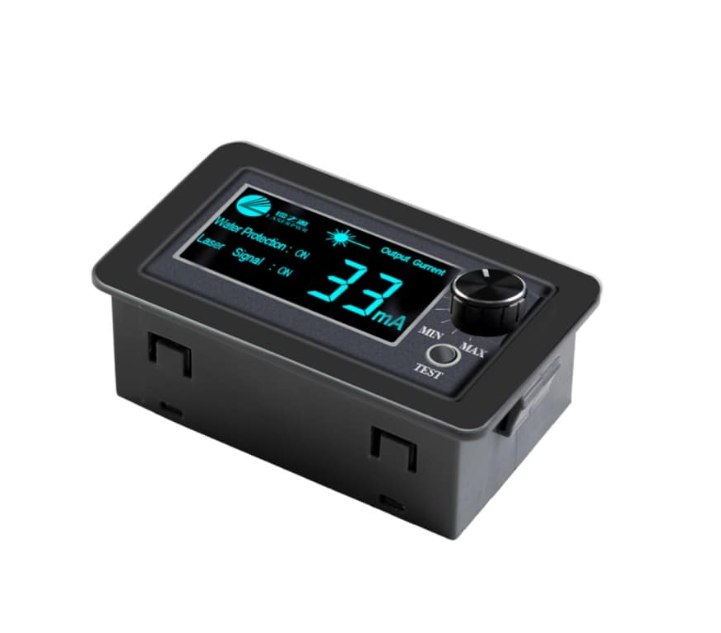
Функции корпуса Ortur Enclosure 2.0 активируются через приложение Laser Explorer App (Wi-Fi) или веб-интерфейс.
Через приложение: Подключите станок по Wi-Fi (2.4 ГГц), нажмите 5 раз кнопку Power для активации, подтвердите соединение.
Через веб-интерфейс: Подключите станок по USB, в LightBurn в консоли введите команды $74, $75, $WRS для получения IP-адреса. Введите IP в браузере (логин admin, пароль admin).
Для промывки чиллеров и контуров охлаждения используйте специальные средства или дистиллированную воду. Не допускайте застоя воды и цветения. Регулярно меняйте теплоноситель (раз в 2-4 месяца) и промывайте систему при появлении загрязнений.
Приветствую! Меня зовут Максим
Я — ведущий инженер компании Torden, где занимаюсь решением сложных технических задач, проектированием и настройкой промышленного лазерного оборудования.
Также я являюсь создателем станкокомплекта Axiom — решения, которое помогает вывести производство на новый уровень.
⚙️
Ведущий инженер
Опыт решения нестандартных задач в Torden.
🚀
Создатель Axiom
Разработка и внедрение станкокомплекта Axiom.
Сейчас я запускаю свой отдельный проект — профессиональную пусконаладку CO₂-лазерных станков в Санкт-Петербурге и Ленинградской области.
🎓 Авторский видеокурс по ремонту
Параллельно я записываю масштабный цикл обучающих роликов. От простой юстировки до ремонта и диагностики высоковольтных блоков розжига.
Курс создан для инженеров из дальних регионов. Платформы: Boosty и Patreon.
Boosty
Patreon
Обучение
📸 Рабочие моменты